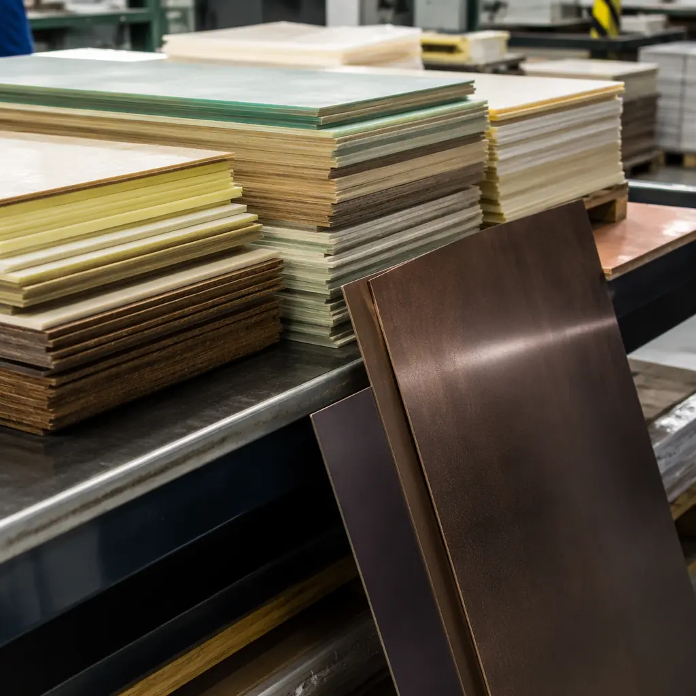

The laminate — the glass-reinforced epoxy or hydrocarbon-ceramic composite that forms your PCB's dielectric layers — is the foundation that every trace, via, and plane is built on. At frequencies below 1 GHz, standard FR-4 (Tg 130–140°C) works fine. Above that, dielectric constant (Dk) stability and dissipation factor (Df) become the dominant variables controlling signal loss, impedance consistency, and eye diagram closure. The wrong laminate choice on a 25 Gbps SerDes channel can eat your entire loss budget before the signal reaches the connector — and fixing it means a complete board respin. This guide compares the five laminate families most commonly specified on high-performance PCB fabrication orders, with real Dk/Df data and cost-per-panel numbers so you can make a data-driven material decision.
At Huaxing PCBA, we stock and process 14 laminate grades across FR-4, mid-loss, low-loss, and RF/microwave categories. Our Shenzhen facility handles hybrid stackups — combining Rogers RF laminates on outer layers with FR-4 cores — and high-Tg materials up to Tg 200°C for automotive and aerospace applications. Here's a practical field guide to laminate selection based on our experience fabricating PCBs for telecom, datacom, automotive, and industrial customers.

The Three Numbers That Define a Laminate
Dk (Dielectric Constant, εr) — Controls Impedance and Propagation Speed
Dk determines the characteristic impedance of your traces and the velocity at which signals propagate. Standard FR-4 has Dk ≈ 4.2–4.6 at 1 GHz. The problem: FR-4's Dk varies significantly with frequency and temperature — dropping 0.1–0.3 units between 1 GHz and 10 GHz as the resin matrix responds differently to changing electric fields. For digital designs above 5 Gbps, this Dk variation across frequency causes dispersion — different frequency components of the same signal travel at different speeds, smearing the eye diagram. Low-loss laminates maintain Dk within ±0.05 from DC to 40 GHz. See our PCB signal integrity guide for how Dk stability affects channel loss budgets.
Df (Dissipation Factor, Loss Tangent) — Controls Signal Attenuation
Df is the fraction of signal energy converted to heat in the dielectric. Standard FR-4 has Df ≈ 0.020 at 1 GHz. Every 10°C temperature rise increases Df by 5–10%, meaning your signal loss gets worse as the board heats up. Low-loss materials bring Df below 0.005 at 10 GHz, reducing dielectric loss proportionally. For a 25 Gbps NRZ signal on a 500mm trace, FR-4 (Df 0.020) introduces ~8–12 dB of dielectric loss alone — exceeding most receiver equalization budgets. A mid-loss laminate (Df 0.008) drops this to ~3–5 dB. Our impedance control guide covers how Dk and Df interact for controlled-impedance designs.
Tg (Glass Transition Temperature) — Controls Thermal Reliability
Tg is the temperature at which the resin transitions from rigid to soft. Above Tg, the CTE (coefficient of thermal expansion) on the Z-axis increases 3–5×, causing the laminate to expand vertically and stress plated through-holes. Standard FR-4 (Tg 130°C) is fine for consumer electronics that see ambient temperatures. For lead-free soldering (peak reflow 245–260°C), automotive under-hood (125°C ambient), or high-layer-count boards that see multiple reflow cycles, specify Tg ≥ 170°C. The IPC-4101 slash sheet system classifies laminates primarily by Tg and filler content — your fabricator needs this slash sheet number to quote correctly.
Laminate Family Comparison — Dk, Df, Tg, and Cost
| Laminate | Dk @ 10 GHz | Df @ 10 GHz | Tg (°C) | Relative Cost | Best Application |
|---|---|---|---|---|---|
| Standard FR-4 (Shengyi S1141) | 4.2–4.6 | 0.018–0.022 | 130–140 | 1× (baseline) | Consumer, <1 GHz digital |
| High-Tg FR-4 (Shengyi S1000-2) | 3.9–4.2 | 0.014–0.018 | 170–180 | 1.2–1.5× | Automotive, industrial, lead-free |
| Mid-Loss (Isola FR408HR) | 3.6–3.8 | 0.008–0.010 | 180–190 | 1.8–2.5× | 10–25 Gbps digital, servers |
| Low-Loss (Panasonic Megtron 6) | 3.4–3.6 | 0.002–0.004 | 185–195 | 3–5× | 25–56 Gbps, 5G base stations |
| Very Low-Loss (ITEQ IT-968G) | 3.2–3.4 | 0.001–0.002 | 190–200 | 4–7× | 56–112 Gbps, data center |
| RF/Microwave (Rogers RO4003C) | 3.38 ±0.05 | 0.0027 @ 10 GHz | >280 (decomp) | 8–15× | RF, mmWave, antenna arrays |
Decision Heuristic: For every 10 dB of total channel loss budget, allocate 3 dB to dielectric loss (laminate) and 7 dB to conductor loss (copper roughness, trace geometry). If your dielectric loss exceeds 3 dB at Nyquist frequency, move up one laminate grade.
Manufacturer-by-Manufacturer Deep Dive
Shengyi S1000-2 — The Workhorse High-Tg FR-4 (China)
Shengyi is the world's largest PCB laminate manufacturer by volume. The S1000-2 is their premium high-Tg FR-4: Tg 175°C, Dk 3.9–4.2, Df 0.014–0.018, with phenolic-cured epoxy and woven E-glass. It's the default laminate for 90% of the high-Tg boards fabricated in Shenzhen. Key advantage: massive availability — every fabricator stocks it, lead times are days not weeks, and cost is only 20–50% above standard FR-4. For designs up to ~5 Gbps where Df isn't yet the limiting factor, S1000-2 is the cost-optimal choice. Shengyi also offers S7439 (mid-loss, Df 0.008) and Synamic series (low-loss, Df 0.002) for higher-speed applications. For PCB cost factors, laminate grade drives 15–40% of total bare-board cost.
Isola FR408HR — The Mid-Loss Standard (US)
Isola FR408HR (Tg 185°C, Dk 3.6–3.8, Df 0.008–0.010) is the most commonly specified mid-loss laminate worldwide. The naming is deliberate: "408" = 40 series with Df ~0.008, "HR" = high reliability. It uses a proprietary multifunctional epoxy resin with low-Dk E-glass reinforcement. FR408HR bridges the gap between standard FR-4 (Df 0.020) and expensive low-loss materials (Df <0.004) — and it does so at roughly 1.8–2.5× FR-4 cost. For 10–25 Gbps designs, FR408HR is the standard recommendation from most SI engineers. Our PCB stackup design guide includes FR408HR stackup templates for 8, 12, and 16-layer boards.
Panasonic Megtron 6 — The Low-Loss Gold Standard (Japan)
Megtron 6 (R-5775, Tg 185°C, Dk 3.4–3.6, Df 0.002–0.004) is the laminate that dominates 25–56 Gbps designs in telecom, datacom, and high-performance computing. Its halogen-free polyphenylene ether (PPE) resin system delivers significantly lower Df than epoxy-based systems while maintaining good CAF (conductive anodic filament) resistance and thermal reliability. Megtron 6 costs 3–5× FR-4 but is still cost-competitive against Rogers materials for digital applications. Panasonic also offers Megtron 7 (Df 0.001, for 112 Gbps PAM4) and Megtron 8 (Df <0.001). For telecom and 5G PCBs, Megtron 6 is the workhorse laminate for baseband and backplane applications.
ITEQ IT-968G — The Emerging Very-Low-Loss Contender (Taiwan)
ITEQ IT-968G (Tg 195°C, Dk 3.2–3.4, Df 0.001–0.002) is positioned as a Megtron 6/7 competitor at a 10–20% lower price point. It uses a modified PPE resin with high-Tg filler system and spread glass for improved dimensional stability. IT-968G is gaining adoption in server and switch applications at 56–112 Gbps where designers want Megtron-level Df without Megtron pricing. Supply chain note: ITEQ availability in China is excellent (ITEQ has major manufacturing in Zhongshan and Suzhou), but European and North American fabricators may have longer lead times. For AI edge computing PCBs running high-speed interconnects, IT-968G is increasingly the laminate specified on fabrication notes.
Rogers RO4003C — RF and Microwave (US)
RO4003C (Dk 3.38 ±0.05, Df 0.0027, Tg >280°C decomposition) is a hydrocarbon-ceramic laminate, not epoxy-based. It offers exceptional Dk stability across both frequency and temperature — critical for RF filters, antenna arrays, and power amplifiers where impedance drift directly degrades performance. Unlike PTFE-based laminates (Rogers RT/duroid series), RO4003C is process-compatible with standard FR-4 fabrication (no sodium etching or plasma treatment required), making it practical for hybrid stackups. Cost: 8–15× FR-4. For RF PCB design and manufacturing, RO4003C is the standard for sub-6 GHz and mmWave applications up to 30 GHz. Above 30 GHz, consider RO3003 or RT/duroid 5880.
Application-Specific Laminate Recommendations
| Application | Signal Speed | Recommended Laminate | Why |
|---|---|---|---|
| Consumer IoT / Wearables | <1 Gbps | Standard FR-4 (S1141) | Cost-sensitive, short traces, low layer count |
| Automotive ECU / BMS | 0.1–1 Gbps (CAN/LIN) | High-Tg FR-4 (S1000-2) | Thermal reliability, IATF compliance |
| Industrial PLC / Motor Drive | <1 Gbps | High-Tg FR-4 (S1000-2) | Multiple reflow cycles, wide temp range |
| Server / Switch Backplane | 25–56 Gbps | Megtron 6 or IT-968G | Df driven — loss budget dominant |
| 5G Base Station / RRU | 10–25 Gbps + RF | Megtron 6 + Rogers hybrid | Digital speed + RF PA on same board |
| Data Center 112G Switch | 56–112 Gbps PAM4 | Megtron 7 or IT-988G | Ultra-low Df, extremely tight Dk control |
| mmWave Radar / 77 GHz | 24–81 GHz RF | RO3003 / RT5880 | Lowest Df at mmWave, stable Dk |
| Medical Implant / Aerospace | Varies | Polyimide or High-Tg FR-4 | Reliability, outgassing, thermal cycling |
Hybrid Stackups — Mixing Laminates in One Board
Many high-frequency designs use a hybrid stackup: RF materials on the outer layers (where antenna elements and transmission lines sit) and standard or mid-loss FR-4 on inner layers (for power/ground planes and low-speed digital). This cuts the board cost by 40–60% compared to an all-RF-laminate stackup while delivering the same RF performance where it matters.
The key constraint: the CTE mismatch between different laminate types. Rogers RO4003C has a Z-axis CTE of ~46 ppm/°C; FR-4 is ~60–70 ppm/°C. This differential expansion stresses the resin-to-resin bond at the laminate interface. For reliability, the prepreg bonding the dissimilar materials must be selected to absorb the CTE difference — typically a high-resin-content (60–70%) prepreg with low-flow characteristics. For PCB thermal management considerations in hybrid stackups, the CTE differential also affects via reliability under thermal cycling.
How to Specify Laminate on Your Fabrication Drawing
Use the IPC-4101 Slash Sheet Number
Instead of specifying "Panasonic Megtron 6," write: "IPC-4101/102" (for high-Tg FR-4) or specify by manufacturer + grade: "Panasonic R-5775 (Megtron 6) or equivalent". The "or equivalent" clause lets your fabricator substitute a comparable material if your preferred laminate has supply chain delays — which saves weeks of lead time. For Shenzhen fabricators, IT-968G is a common Megtron 6 equivalent. For PCB materials selection, this slash-sheet equivalency is standard industry practice.
Specify Dk/Df Tolerance, Not Just the Nominal Value
Writing "Dk = 3.5" is insufficient — your fabricator needs the tolerance: "Dk = 3.5 ±0.05 @ 10 GHz". Different laminate batches from the same manufacturer can vary ±0.04–0.08 in Dk. If your impedance budget demands tighter control, specify "impedance test coupons required" and let the fabricator adjust line widths based on actual laminate batch Dk — this is standard practice for controlled-impedance orders. See our PCB certifications guide for IPC-4101 compliance requirements.
Include UL Recognition Requirements
For products requiring UL listing, the laminate must be UL-recognized with a minimum RTI (Relative Thermal Index) appropriate for your operating temperature. Most mid-loss and low-loss laminates carry UL recognition with RTI ratings of 130–150°C. Specify "UL 94 V-0, UL-recognized laminate required" on your fab drawing. This is non-negotiable for products sold in North America. Our RoHS compliance guide covers the related material restrictions.
Summary: Match the Laminate to Your Frequency and Reliability Needs
Laminate selection boils down to three questions: What's your maximum signal frequency? What's your operating temperature range? What's your acceptable cost multiplier over baseline FR-4? For consumer designs under 1 GHz, standard FR-4 is the answer — and spending more on laminate is wasted budget. For automotive and industrial electronics, high-Tg FR-4 with Tg ≥170°C is the minimum — for thermal reliability during lead-free assembly. For 25 Gbps and above, you're in mid-loss or low-loss territory where laminate cost jumps 3–7× but is still a fraction of the total BOM. And for RF/microwave, the laminate is your circuit — the cost premium is non-negotiable.
At Huaxing PCBA, we stock Shengyi S1000-2, Isola FR408HR, Panasonic Megtron 6, ITEQ IT-968G, and Rogers RO4003C as standard inventory items — no long-lead-time special orders for these materials. If your design specifies a laminate we don't stock, we can source it from our supplier network, typically adding 3–5 business days to lead time. Learn how to audit PCB suppliers for laminate handling capability, or submit your stackup requirements for a material-specific fabrication quote.